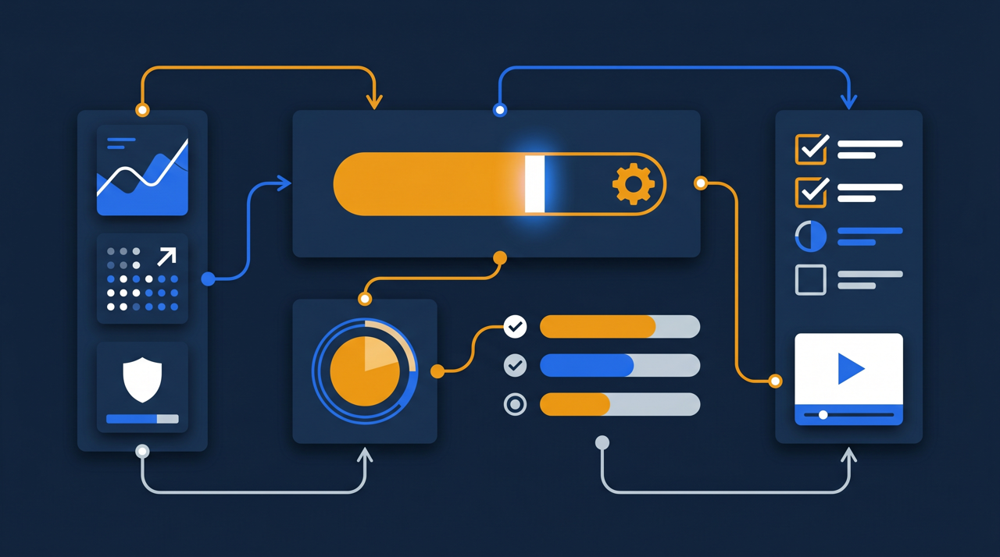
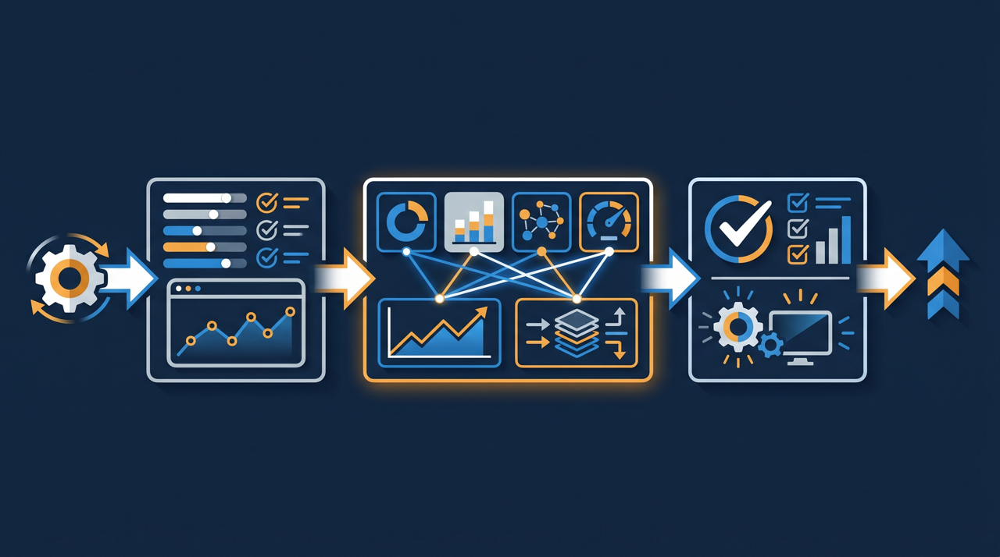
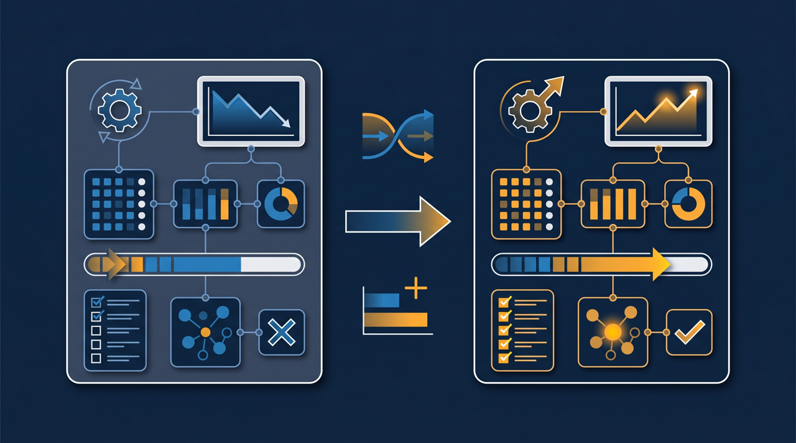

「LMSを入れたのに、結局ほとんど使われていない」——導入したものの社内に定着せず、もったいない状態になっている。そんな話を聞くことが少なくありません。原因の多くは、機能の多さや価格だけで選んでしまい、実際に使う人の立場が抜けていたことにあります。この記事では、LMSを「受講者」「管理者」「運営・経営」の3つの視点から見極める選び方を、つまずきやすい例とあわせて整理します。

LMSの選び方は「機能比較表」から始めると失敗しやすい
LMSを検討するとき、多くの方がまず機能の一覧表を作ります。動画配信、テスト、進捗管理、修了証、SNS連携——こうした項目を各社で丸とバツで並べていく。一見、合理的な進め方に見えますよね。けれど、この比較表だけで決めてしまうと、導入後に「思っていたのと違った」となることが多いんです。
なぜでしょうか。機能の数は、研修がうまく回るかどうかと、必ずしも一致しないからです。たとえば、機能が30個あるツールと10個のツールがあったとして、自社が使うのが結局3〜4機能なら、残りは使わないまま費用を払い続けることになります。むしろ機能が多いほど画面が複雑になり、受講者も管理者も操作に迷う、ということが起きがちです。
ある製造業の会社では、有名な高機能LMSを契約したものの、現場のスタッフが「どこから動画を見ればいいか分からない」と言って、ほとんど視聴されないまま1年が過ぎたそうです。機能は申し分なかったのに、肝心の「見てもらう」が達成できなかったわけです。これは機能比較表には現れない問題でした。
だからこそ、機能を並べる前に視点を整理する必要があります。LMSに関わる人は、大きく分けて3者います。実際に学ぶ「受講者」、研修を回す「管理者」、そして投資を決める「運営・経営」。この3者それぞれにとって良いかどうかを見ていくと、比較表では拾えなかった大事な点が見えてきます。順番に見ていきましょう。
視点1：受講者にとって使いやすいか
最初の視点は、実際に学ぶ受講者です。ここが軽視されがちなのですが、研修が成立するかどうかを一番左右する部分でもあります。受講者がストレスなく学べなければ、どんなに良い教材を用意しても見てもらえません。
- ログインや受講開始までの手順が、説明なしでも分かるか
- スマートフォンやタブレットで、移動中やスキマ時間に視聴できるか
- 動画の途中から再生を再開できるなど、続きから学べるか
- 通信環境が不安定でも視聴に支障が出にくいか
- どこまで進んだか、次に何をすればよいかが画面で分かるか
特にスマートフォン対応は、現場スタッフが多い業種ほど効いてきます。小売や飲食、介護、建設といった現場では、業務中にパソコンを開く時間がほとんどありません。通勤時間や休憩中にスマホで少しずつ見られるかどうかが、受講率を大きく変えるんです。
ある飲食チェーンでは、以前は店舗のバックヤードのパソコンでしか研修動画を見られず、忙しい時間帯はまったく進みませんでした。スマホで見られるツールに切り替えたところ、空き時間に各自が視聴するようになり、受講完了までの日数が縮まったといいます。受講者の使い勝手は「あれば便利」ではなく、研修が回るかどうかの土台なんですね。
ところで、受講者の使いやすさを確認するには、カタログを見るだけでは足りません。可能であれば、実際に現場のスタッフ数名に試してもらい、「迷わず最後まで見られたか」を聞いてみる。導入を決める人ではなく、使う人の感覚で判断することが大切です。
視点2：管理者にとって運用負担が軽いか
2つ目の視点は、研修を回す管理者です。人事・総務の担当者や、現場のリーダーがこの役割を担うことが多いですよね。LMSは導入して終わりではなく、毎月の運用が続きます。その運用の手間が重いと、担当者が疲弊して、いずれ使われなくなってしまいます。

管理者が日常的に行う作業を分解すると、おおむね次のようになります。受講者を登録する、研修の案内を送る、見ていない人にリマインドする、進捗を確認する、修了状況をまとめる。この一連の流れに、どれくらい手間がかかるかを見ておきたいところです。
たとえば受講者の登録ひとつとっても、1人ずつ手で入力するのか、名簿をまとめて取り込めるのかで負担が大きく変わります。リマインドも、未受講者を一覧で抽出して一括で送れるのか、それとも手作業で一人ひとり連絡するのかでは、毎月の作業時間がまるで違ってきます。
- 受講者の登録を、名簿の一括取り込みなどでまとめて行えるか
- 未受講者の抽出やリマインド送信を、効率よく行えるか
- 誰がどこまで進んだかが、一覧で把握できるか
- 部門・拠点ごとに研修を分けて配信・管理できるか
- 受講記録や修了状況を、データとして出力できるか
中小企業基盤整備機構が運営するJ-Net21などでも、限られた人員で人材育成を回す中小企業にとって、運用の効率化は重要なテーマとして取り上げられています。担当者が1人で兼務しているケースも多く、その人の作業がどれだけ減るかは、導入の成否を分ける現実的な論点です。
ある介護施設では、以前は紙の名簿に受講のチェックを手書きで付け、月末に集計していました。LMSで進捗が自動的に記録されるようになり、集計作業がほぼなくなったといいます。管理者の負担が軽くなると、その分を教材の改善や個別のフォローに回せるようになる、というわけです。
視点3：運営・経営にとって投資に見合うか
3つ目は、投資を判断する運営・経営の視点です。LMSの導入には費用がかかります。月額のライセンス料、初期設定の手間、教材を作る時間。これらに見合うだけの効果が得られるかを、経営として見ておく必要があります。
ここで大事なのは、コストを「安いほど良い」と単純に考えないことです。安価なツールでも、受講管理ができず後から有料版に乗り換える、データを移せず教材を作り直す、といったことになれば、かえって高くつくことがあります。逆に高機能でも使われなければ、費用だけが残ります。投資判断は、価格そのものではなく「費用に対してどれだけ研修が回るか」で見るのが現実的です。

経営視点で見ておきたい論点を、いくつか挙げてみます。まず、料金体系が自社の規模に合っているか。受講者の人数で課金されるのか、定額なのかで、人が増えたときのコストが変わります。次に、将来の使い方の広がりに対応できるか。最初は社内研修だけでも、後で多拠点に展開したり、外部向けに講座を販売したりする可能性があるなら、その拡張に耐えられるかを見ておくと安心です。
そして見落とされがちなのが、助成金との相性です。人材開発支援助成金のように、研修の実施を経費や賃金の面で支援する制度を活用する場合、受講記録や修了の証明といった書類の整理が求められることがあります。受講ログや修了状況をデータで出力できるツールなら、こうした手続きの負担を抑えやすくなる傾向があります。導入費用の一部を助成金でまかなえる可能性も含めて、費用対効果を考えられると、投資判断の幅が広がりますよね。
なお、受講者の個人情報や教材を扱う以上、セキュリティ面も経営の責任範囲です。情報処理推進機構（IPA）も中小企業向けに情報セキュリティ対策の指針を示していますが、どこにデータが保管され、誰がアクセスできるのかを確認しておくことは、規模を問わず必要な確認事項といえます。あるサービス業の会社では、当初は価格の安さだけで小規模なツールを選びましたが、受講者が増えたタイミングで管理機能が足りなくなり、結局別のLMSへ移し替えることになりました。最初に少し手間をかけて将来の使い方まで見ておけば、こうした二度手間は避けられた可能性があります。投資判断は、目先の月額だけでなく、数年使ったときの総額と手間で見ておくと、後悔が少なくなる傾向がありますね。
3つの視点を1枚に整理する
ここまでの3視点を、判断しやすいように表にまとめておきます。検討中のツールを、それぞれの視点で点検してみてください。
| 視点 | 主に見る人 | 確認したいこと |
|---|---|---|
| 受講者 | 現場スタッフ・社員 | 迷わず学べるか、スマホで見られるか、続きから学べるか |
| 管理者 | 人事・総務・現場リーダー | 登録・案内・進捗確認の手間、データ出力のしやすさ |
| 運営・経営 | 経営層・決裁者 | 料金体系、将来の拡張性、助成金対応、セキュリティ |
3つの視点は、どれか1つだけ満たせばよいものではありません。受講者に優しくても管理者の負担が重ければ運用が続きませんし、運用が軽くても投資に見合わなければ経営が首を縦に振りません。3者のバランスを見て、自社にとって過不足のないツールを選ぶ、という姿勢が現実的です。
ある小売業の会社では、最初に受講者と管理者の声を集めてから候補を絞り、最後に経営が費用面を確認する、という順で進めたそうです。使う人の納得を先に得たことで、導入後の定着がスムーズだったといいます。順番として、機能の多さから入るのではなく、関わる人の立場から入る。これが遠回りに見えて、実は失敗を減らす近道なんです。
選定でよくあるつまずきと、その避け方
最後に、LMS選びでつまずきやすい例と、その避け方を整理しておきます。先に知っておくだけで、防げることが多くあります。
1つ目は、デモを見ただけで決めてしまうこと。営業のデモは、うまくいく流れで設計されています。可能なら無料トライアルで、自社の教材を実際に登録し、現場のスタッフに使ってもらってから判断するほうが確実です。
2つ目は、今の人数だけで料金を判断すること。研修対象が増えたとき、あるいは多拠点に広げたときに、費用がどう変わるかを見ておかないと、後で予算が膨らむことがあります。料金は「将来の使い方」も含めて確認したいところです。
3つ目は、データの持ち出しやすさを確認し忘れること。一度入れたツールを後で変える可能性はゼロではありません。受講記録や教材を別の環境に移せるかどうかは、長く使ううえでの安心材料になります。
そして全体を通して言えるのは、目的を最初に言葉にしておくことの大切さです。「新人教育を効率化したい」「拠点間の教育のばらつきをなくしたい」「助成金を活用して研修を整えたい」——目的が明確なら、その目的に効く機能だけを見ればよくなり、比較がぐっと楽になります。逆に目的が曖昧なまま機能の多さで選ぶと、使わない機能にお金を払い、肝心の課題は解決しない、ということになりかねません。
まとめ：使う人の立場から選ぶと、研修は回り始める
LMSの選び方で最も大切なのは、機能の数や価格そのものではなく、関わる3者——受講者・管理者・運営——それぞれにとって使いやすく、無理なく運用でき、投資に見合うかどうかを見ることです。受講者が迷わず学べ、管理者の手間が軽く、経営が投資に納得できる。この3つがそろって初めて、研修は仕組みとして回り始めます。
検討の入り口では、機能比較表を作る前に「自社は研修で何を達成したいのか」を一文で書いてみてください。目的がはっきりすれば、見るべきポイントは自然と絞られていきます。そして無料トライアルなどで実際に使う人に触れてもらい、3つの視点で点検する。この進め方なら、導入したのに使われない、という事態を避けやすくなります。
研修を組織の資産として長く運用していくうえで、LMSは土台になる存在です。費用面では人材開発支援助成金などの制度を活用できる場合もありますので、仕組みづくりと費用の両面から、自社に合った選び方を検討してみてください。
よくある質問
LMSは Learning Management System（学習管理システム）の略で、研修動画やeラーニング教材を配信し、誰がどこまで学んだかを記録・管理するためのシステムです。コースの配信、受講者の登録、進捗の可視化、確認テスト、修了証の発行などをまとめて行えるものが多くあります。
機能を比べる前に、自社が研修で何を達成したいのか（目的）と、誰が使うのか（対象）を先に言葉にしておくことをおすすめします。目的が「新人教育の効率化」なのか「助成金の活用」なのかで、重視すべき機能が変わってくるためです。
どれほど高機能でも、受講者がログインや視聴でつまずくと受講率が下がり、研修そのものが進まなくなる傾向があるためです。特に現場スタッフが多い企業では、スマートフォンで簡単に視聴できるかどうかが、定着を左右することが多くあります。
受講者の登録、案内やリマインドの送信、進捗の確認、修了状況の出力といった日常の運用に、どれくらい手間がかかるかを確認するとよいです。導入後に担当者の作業が増えすぎると、運用が続かなくなることがあります。
人材開発支援助成金などを活用する場合、受講記録や修了の証明といった書類の整理が求められることがあります。受講ログや修了状況をデータとして出力できるかを、選定の段階で確認しておくと、後の手続きが進めやすくなる傾向があります。
目的によっては十分なこともあります。ただし、受講管理や進捗の記録、データの出力、サポート体制といった面で制限があることが多く、研修を組織の仕組みとして長く運用したい場合は、運用負担や移行のしやすさまで含めて比較することをおすすめします。